AD User & Group Management
Creating users, resetting passwords, unlocking accounts, managing group memberships, and organising OUs in a departmental structure.
01 / ISOLATED PERSONAL HOMELAB
I built a small Windows domain lab in Oracle VirtualBox to practice common entry-level IT Support tasks. Using Windows Server 2022 and an isolated Windows 7 test client, I configured Active Directory users and groups, departmental shared folders, and a targeted Control Panel restriction policy. I documented both successful configurations and a GPO troubleshooting exercise involving a missing Read permission.
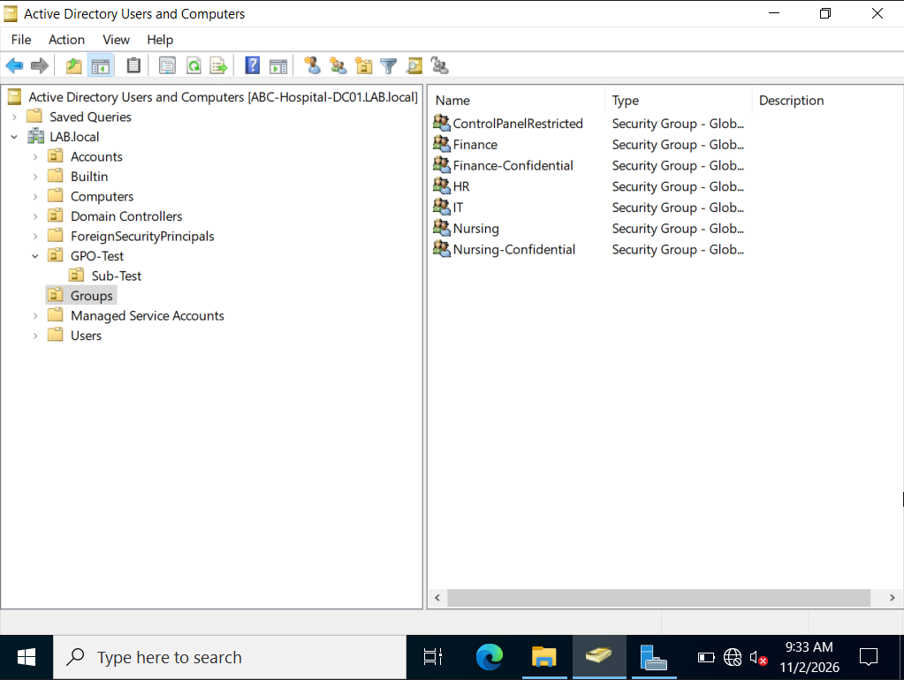
ENVIRONMENT
OBJECTIVES
SCOPE & LIMITS
IMPLEMENTATION
I organised AD Users and Computers with departmental OUs nested under an Accounts parent: Finance Accounts, HR Accounts, IT Accounts, and Nursing Accounts. Additional OUs — Groups, GPO-Test, and a nested Sub-Test — support policy and group management.
Security groups created: Finance, HR, IT, Nursing, Finance-Confidential, Nursing-Confidential, and ControlPanelRestricted. I practiced user creation, password resets, account unlocks, and group membership changes as simulated support tasks.
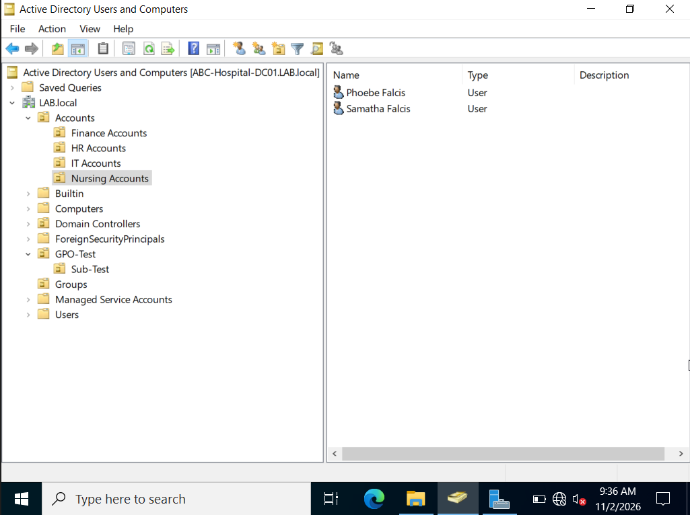
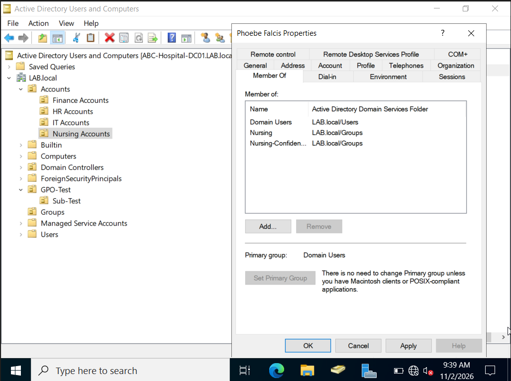
I created departmental shared folders under C:\Shares\ and applied group-based NTFS permissions. The main Nursing folder (C:\Shares\Nursing) has a share ACL of Everyone — Full Control at the share level, with access constrained by NTFS ACL entries granting Modify to the Nursing and Nursing-Confidential groups.
The confidential subfolder (C:\Shares\Nursing\Confidential) has NTFS inheritance disabled, with Modify granted only to Nursing-Confidential. This is configuration evidence; access denial for an unauthorised user was not independently tested in the lab.
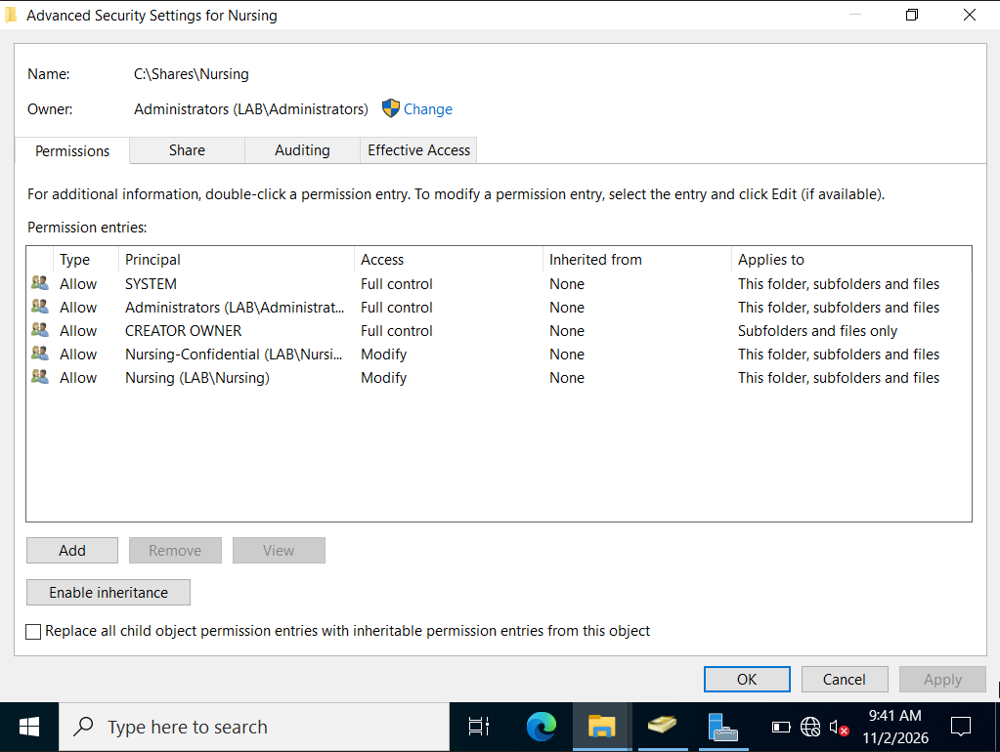
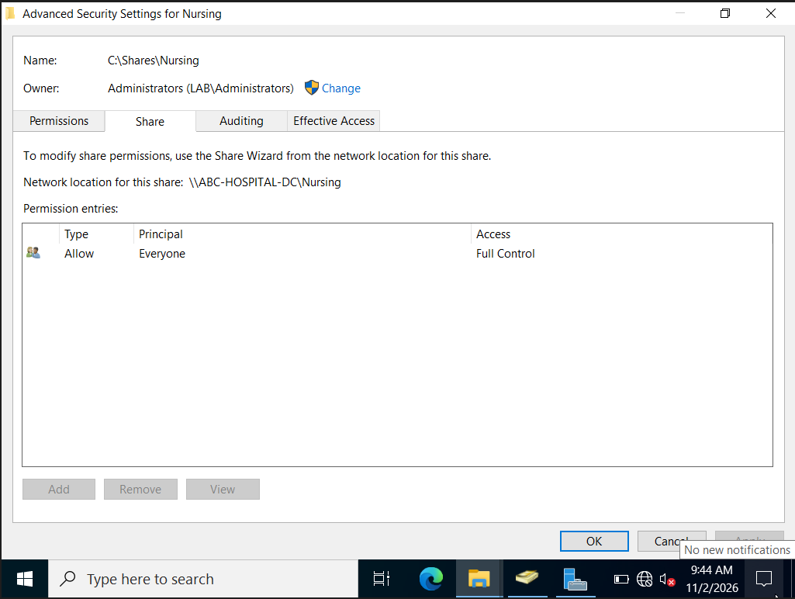
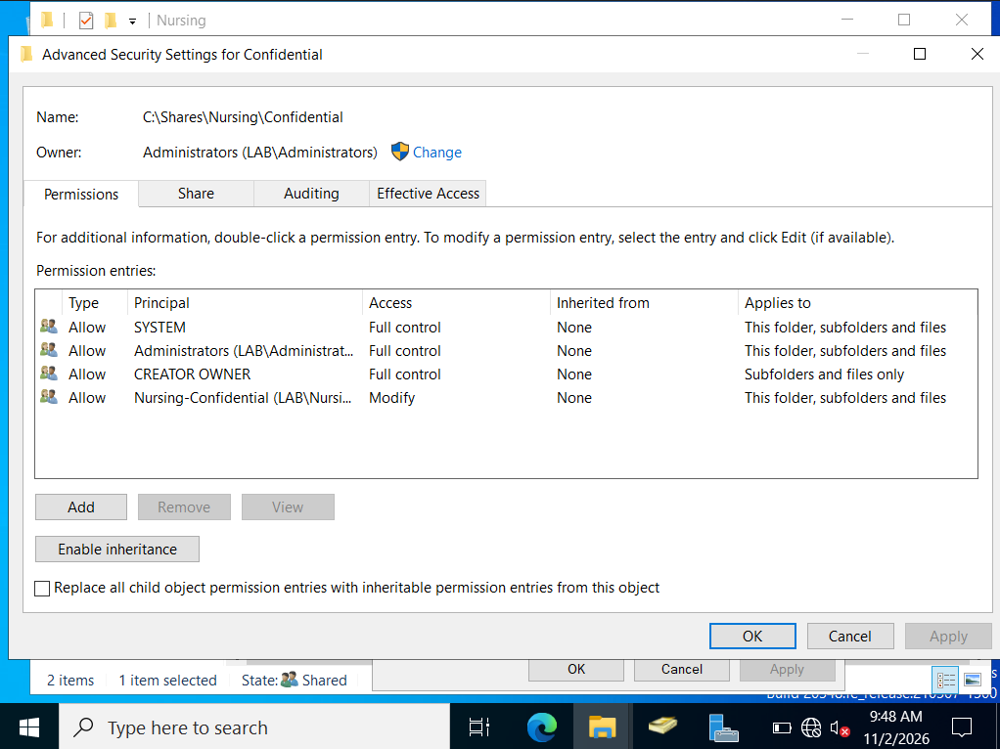
I created a GPO named gpo-restricted-cpanel, linked it to the GPO-Test OU, and enabled Prohibit access to Control Panel and PC settings under User Configuration.
Security filtering targets only the ControlPanelRestricted group: Authenticated Users retains Read-only access (required for GPO processing), while ControlPanelRestricted has Read + Apply Group Policy.
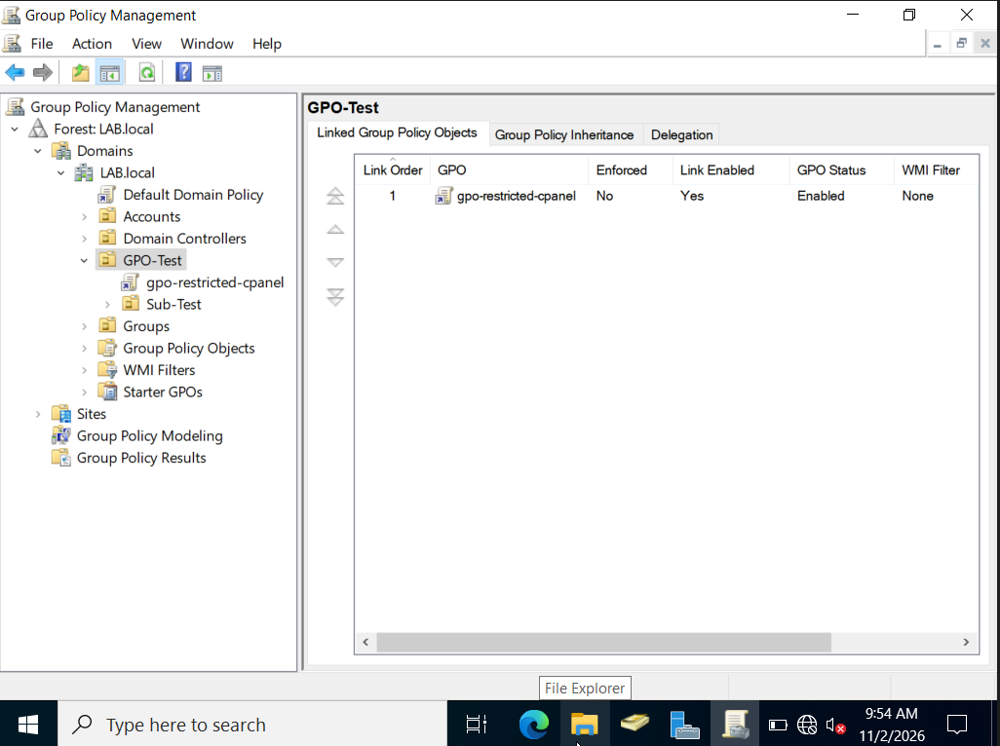
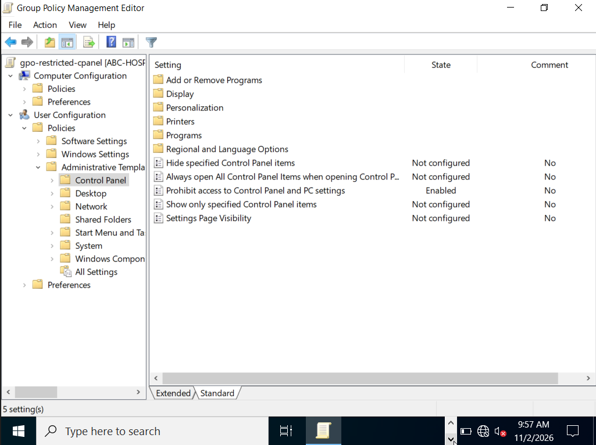
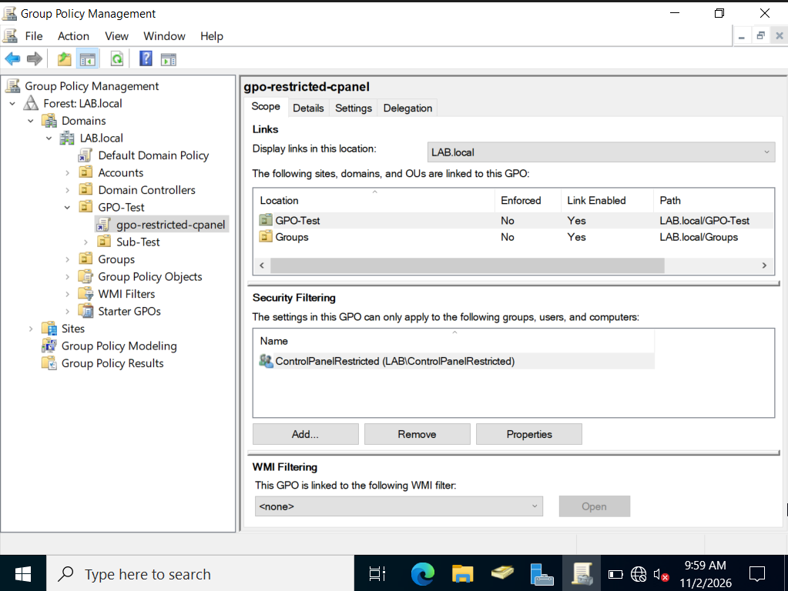
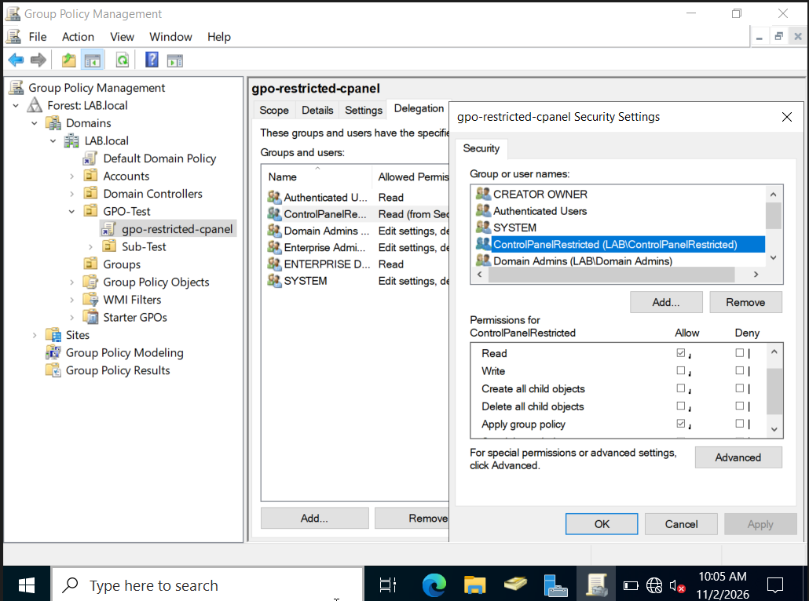
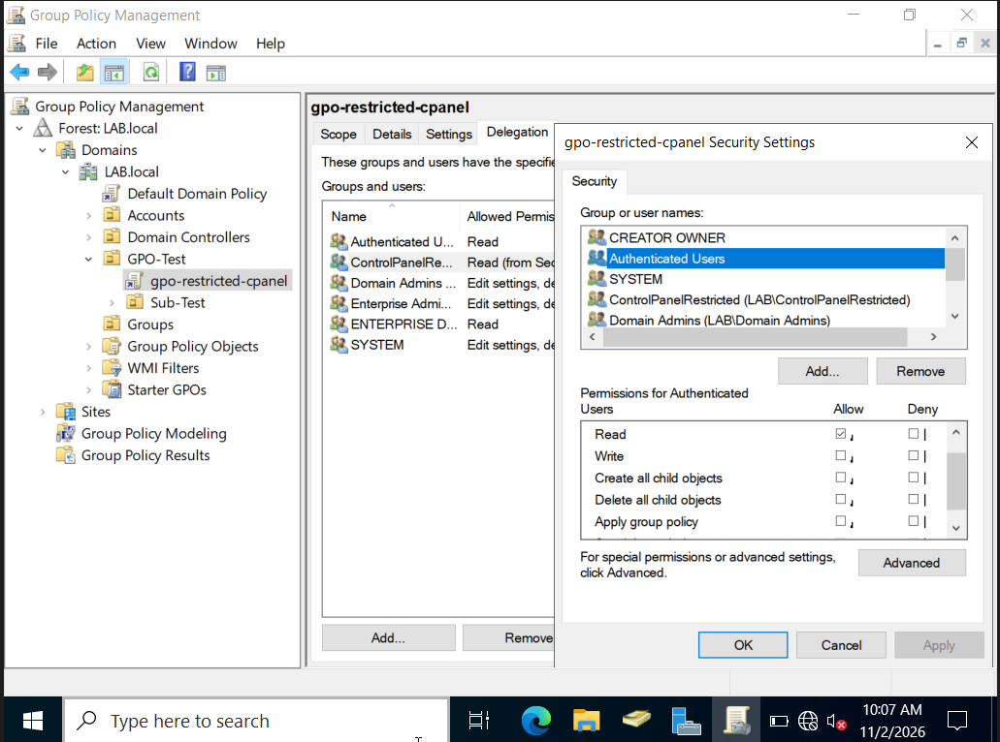
TROUBLESHOOTING
During testing, gpresult /r showed gpo-restricted-cpanel was not applied to the test user's session, with no clear reason code. After reviewing the Delegation tab, I found that Authenticated Users had been removed from the GPO's security descriptor entirely.
When Authenticated Users lacks at least Read access, the client cannot read the GPO metadata during processing — even if the user is a member of the filtering group. Restoring Authenticated Users with Read-only access resolved the issue. I ran gpupdate /force and re-ran gpresult /r to confirm the policy appeared in the Applied GPOs list.
KEY LESSON
Security filtering removes Apply Group Policy from Authenticated Users, but Read must be preserved. Removing Authenticated Users entirely breaks GPO processing for all users, regardless of which group is in the security filter.
VERIFICATION
I logged in as two different domain users to confirm the policy applied only where intended:
gpresult /r lists gpo-restricted-cpanel as applied; Control Panel is blocked.gpresult /r shows the GPO filtered out due to security filtering; Control Panel remains accessible.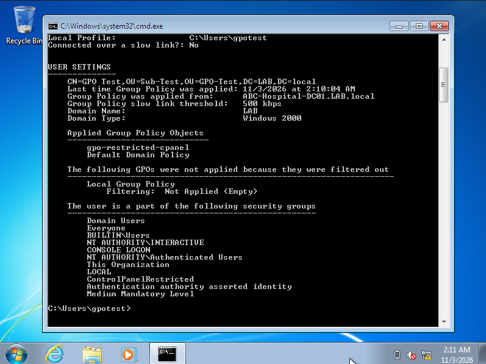
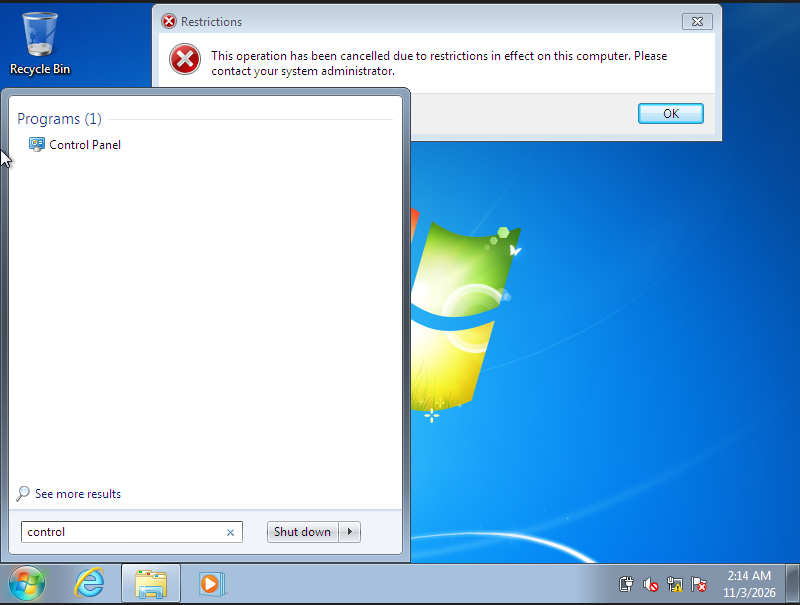
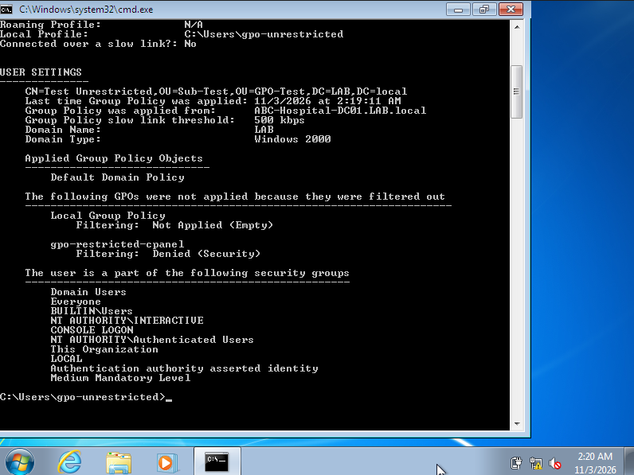
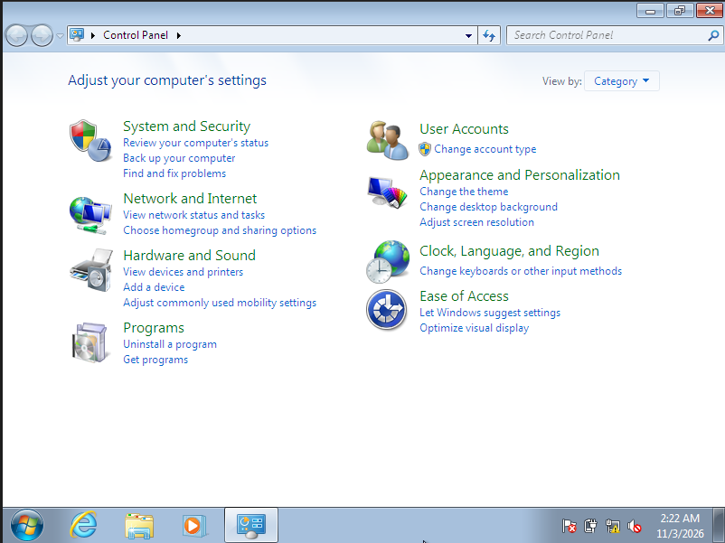
SKILLS & LESSONS
Creating users, resetting passwords, unlocking accounts, managing group memberships, and organising OUs in a departmental structure.
Configuring share-level and NTFS ACLs with role-based group access. Disabling inheritance for a restricted subfolder and understanding how the two permission layers interact.
Creating a GPO, linking it to an OU, enabling a user configuration policy, and applying security filtering so only a specific group is affected.
Using gpresult /r to diagnose a policy not applying. Identifying a missing Authenticated Users Read permission as the root cause and verifying the fix.